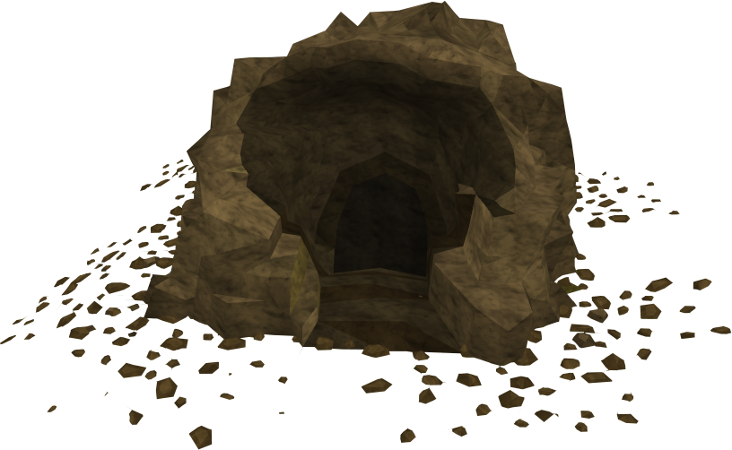
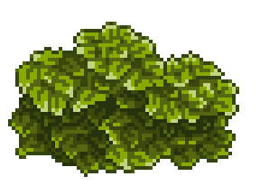
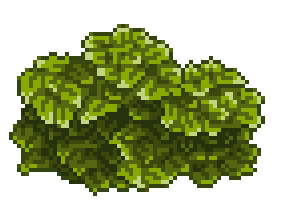
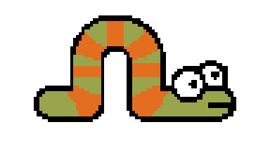
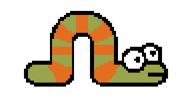

You are lost in the woods. It's raining, you're cold, you're hungry and you're being hunted...
You're seeking shelter, you're looking for food, and you need a map...
You're seeking shelter, you're looking for food, and you need a map...
You stumble upon a dark cave. Do you go inside and wait the storm out or do you keep looking for food?

You walk into the cave, going deeper and deeper, the light of the moon gives you just enough
light to see where you are going Until you come upon a wall with mysterious cavings on it, you touch it,
but can't make out what it says, then you hear a noise! A hungry bear comes and kills you. Star Over
light to see where you are going Until you come upon a wall with mysterious cavings on it, you touch it,
but can't make out what it says, then you hear a noise! A hungry bear comes and kills you. Star Over
You walk away from the cave, unsure if that was the right decision, but you're too hungry to worry about that now.
As you walk, you smell a hint sweet berries in the air. Finally something to eat!
You fall to your hands and knees searching for
a berry bush. You find it... but these berries don't look ripe, they might do more harm than good. Do you eat them?
or not? 
As you walk, you smell a hint sweet berries in the air. Finally something to eat!
You fall to your hands and knees searching for
a berry bush. You find it... but these berries don't look ripe, they might do more harm than good. Do you eat them?
or not? 
You grab a handful of questionable berries and shove them into your mouth. Within seconds your stomach feels
weird, your keel over and puke. They've made you ill, but at least you're still alive.
weird, your keel over and puke. They've made you ill, but at least you're still alive.
You throw the berries to the floor in disgust, you decide to keep searching for something to eat, and after
half a hour with no results you decide it's time to lower your standards, and eat some bugs. 
half a hour with no results you decide it's time to lower your standards, and eat some bugs. 
After crying and puking for hours, the sun is starting to peek out beyond the trees, you finally get up and wipe your mouth because it's time to move on... but where to next?